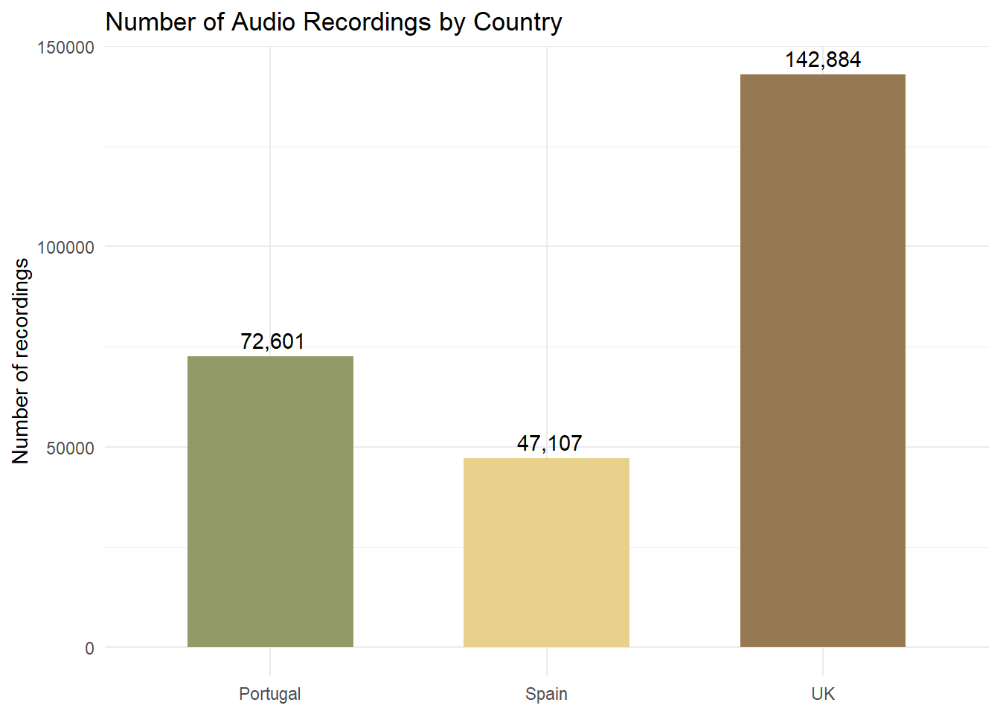
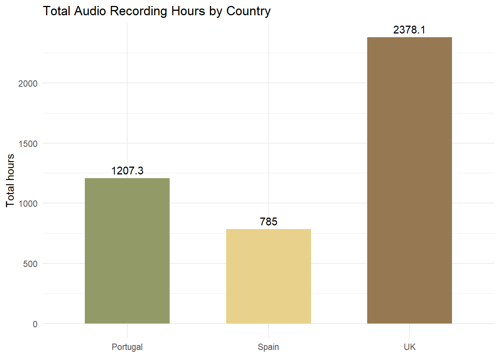

| Country | Total_recordings | Total_hours |
|---|---|---|
| UK | 142884 | 2378.07 |
| Spain | 47107 | 785.04 |
| Portugal | 72601 | 1207.31 |
Acoustic Monitoring on Railways
Comparing sample data from the UK, Spain and Portugal
Introduction
This report presents an exploratory analysis of acoustic monitoring data collected along railway networks across three countries: UK, Spain and Portugal. Acoustic devices were distributed at three sites per country, with three sensors per site. The devices were located on a mixture of farmland, fen (wetland), woodland, and Mediterranean ago-forestry.
The analysis explores differences in recording effort and the diversity and distribution of species detected through acoustic monitoring. In particular, it examines the number of unique recordings collected in each country, the total recording effort, and the extent to which detected species are shared between countries or are recorded exclusively within one country.
Note: More to be added on species patterns, dominance, peak recording times and model confidence.
Recording effort by country
To avoid counting individual species detection’s as separate recordings, unique recordings were identified using the combination of device ID and recording date/time.
Number of audio recordings

Total recording hours

Species richness
Species richness was calculated as the number of unique scientific names detected in each country.
| Country | Number_of_species |
|---|---|
| UK | 241 |
| Spain | 218 |
| Portugal | 234 |
Species overlap between countries
Species were compared between countries using their scientific names. Each species was assigned to one of seven mutually exclusive distribution groups.
| Comparison | Number_of_species |
|---|---|
| Shared by all three | 154 |
| UK and Spain only | 22 |
| UK and Portugal only | 17 |
| Spain and Portugal only | 32 |
| UK only | 48 |
| Spain only | 10 |
| Portugal only | 31 |
Species comparison table
The following table brings together all identified species, their common names and their distribution across the three countries.
| scientific_name | common_name | Distribution |
|---|---|---|
| Acanthis cabaret | Lesser Redpoll | UK only |
| Accipiter gentilis | Northern Goshawk | Shared by all three |
| Accipiter nisus | Eurasian Sparrowhawk | Shared by all three |
| Acrocephalus arundinaceus | Great Reed Warbler | Spain and Portugal only |
| Acrocephalus melanopogon | Moustached Warbler | Spain only |
| Acrocephalus palustris | Marsh Warbler | UK only |
| Acrocephalus schoenobaenus | Sedge Warbler | Shared by all three |
| Acrocephalus scirpaceus | Eurasian Reed Warbler | Shared by all three |
| Actitis hypoleucos | Common Sandpiper | Shared by all three |
| Aegithalos caudatus | Long-tailed Tit | Shared by all three |
| Aegypius monachus | Cinereous Vulture | Portugal only |
| Aix galericulata | Mandarin Duck | UK only |
| Alauda arvensis | Eurasian Skylark | UK and Portugal only |
| Alca torda | Razorbill | UK and Portugal only |
| Alcedo atthis | Common Kingfisher | Shared by all three |
| Alectoris rufa | Red-legged Partridge | Shared by all three |
| Alopochen aegyptiaca | Egyptian Goose | UK only |
| Anas acuta | Northern Pintail | Shared by all three |
| Anas crecca | Green-winged Teal | Shared by all three |
| Anas platyrhynchos | Mallard | Shared by all three |
| Anser albifrons | Greater White-fronted Goose | UK only |
| Anser anser | Graylag Goose | Shared by all three |
| Anser brachyrhynchus | Pink-footed Goose | UK and Portugal only |
| Anthus campestris | Tawny Pipit | Shared by all three |
| Anthus petrosus | Rock Pipit | UK only |
| Anthus pratensis | Meadow Pipit | Shared by all three |
| Anthus spinoletta | Water Pipit | Shared by all three |
| Anthus trivialis | Tree Pipit | Shared by all three |
| Apus apus | Common Swift | Shared by all three |
| Apus melba | Alpine Swift | Spain and Portugal only |
| Apus pallidus | Pallid Swift | Spain and Portugal only |
| Aquila adalberti | Spanish Eagle | Portugal only |
| Aquila chrysaetos | Golden Eagle | Shared by all three |
| Ardea alba | Great Egret | Shared by all three |
| Ardea cinerea | Gray Heron | Shared by all three |
| Ardea purpurea | Purple Heron | Shared by all three |
| Ardeola ralloides | Squacco Heron | Portugal only |
| Arenaria interpres | Ruddy Turnstone | UK and Spain only |
| Asio flammeus | Short-eared Owl | UK only |
| Asio otus | Long-eared Owl | Shared by all three |
| Athene noctua | Little Owl | Shared by all three |
| Aythya collaris | Ring-necked Duck | Portugal only |
| Aythya ferina | Common Pochard | UK and Portugal only |
| Aythya fuligula | Tufted Duck | UK only |
| Bombycilla garrulus | Bohemian Waxwing | UK only |
| Botaurus stellaris | Great Bittern | UK and Spain only |
| Branta bernicla | Brant | UK only |
| Branta canadensis | Canada Goose | UK only |
| Branta leucopsis | Barnacle Goose | UK only |
| Bubo bubo | Eurasian Eagle-Owl | Spain and Portugal only |
| Bubulcus ibis | Cattle Egret | Shared by all three |
| Bucephala clangula | Common Goldeneye | UK and Spain only |
| Burhinus oedicnemus | Eurasian Thick-knee | Shared by all three |
| Buteo buteo | Common Buzzard | Shared by all three |
| Calandrella brachydactyla | Greater Short-toed Lark | Portugal only |
| Calidris alba | Sanderling | UK and Portugal only |
| Calidris alpina | Dunlin | Shared by all three |
| Calidris canutus | Red Knot | UK and Spain only |
| Calidris ferruginea | Curlew Sandpiper | Portugal only |
| Calidris minuta | Little Stint | UK and Spain only |
| Calidris pugnax | Ruff | UK and Spain only |
| Calidris temminckii | Temminck’s Stint | Spain only |
| Calonectris diomedea | Cory’s Shearwater | Shared by all three |
| Caprimulgus europaeus | Eurasian Nightjar | Shared by all three |
| Caprimulgus ruficollis | Red-necked Nightjar | Portugal only |
| Carduelis carduelis | European Goldfinch | Shared by all three |
| Carduelis citrinella | Citril Finch | Spain only |
| Cecropis daurica | Red-rumped Swallow | Spain and Portugal only |
| Cepphus grylle | Black Guillemot | UK only |
| Certhia brachydactyla | Short-toed Treecreeper | Shared by all three |
| Certhia familiaris | Eurasian Treecreeper | UK and Spain only |
| Cettia cetti | Cetti’s Warbler | Shared by all three |
| Charadrius alexandrinus | Kentish Plover | Spain and Portugal only |
| Charadrius dubius | Little Ringed Plover | Shared by all three |
| Charadrius hiaticula | Common Ringed Plover | Shared by all three |
| Charadrius morinellus | Eurasian Dotterel | Spain only |
| Chlidonias hybrida | Whiskered Tern | Shared by all three |
| Chlidonias niger | Black Tern | Shared by all three |
| Chloris chloris | European Greenfinch | Shared by all three |
| Chroicocephalus genei | Slender-billed Gull | Portugal only |
| Chroicocephalus ridibundus | Black-headed Gull | Shared by all three |
| Ciconia ciconia | White Stork | Shared by all three |
| Cinclus cinclus | White-throated Dipper | Shared by all three |
| Circaetus gallicus | Short-toed Snake-Eagle | Portugal only |
| Circus aeruginosus | Eurasian Marsh-Harrier | Shared by all three |
| Circus cyaneus | Hen Harrier | UK only |
| Circus pygargus | Montagu’s Harrier | UK and Portugal only |
| Cisticola juncidis | Zitting Cisticola | Shared by all three |
| Clamator glandarius | Great Spotted Cuckoo | Portugal only |
| Clangula hyemalis | Long-tailed Duck | UK only |
| Coccothraustes coccothraustes | Hawfinch | Shared by all three |
| Columba livia | Rock Pigeon | Shared by all three |
| Columba oenas | Stock Dove | Shared by all three |
| Columba palumbus | Common Wood-Pigeon | Shared by all three |
| Coracias garrulus | European Roller | Spain and Portugal only |
| Corvus corax | Common Raven | Shared by all three |
| Corvus cornix | Hooded Crow | UK only |
| Corvus corone | Carrion Crow | Shared by all three |
| Corvus frugilegus | Rook | UK only |
| Corvus monedula | Eurasian Jackdaw | Shared by all three |
| Coturnix coturnix | Common Quail | Shared by all three |
| Crex crex | Corn Crake | UK only |
| Cuculus canorus | Common Cuckoo | Shared by all three |
| Curruca communis | Greater Whitethroat | Shared by all three |
| Curruca conspicillata | Spectacled Warbler | Portugal only |
| Curruca curruca | Lesser Whitethroat | UK and Spain only |
| Curruca hortensis | Western Orphean Warbler | Portugal only |
| Curruca iberiae | Western Subalpine Warbler | Portugal only |
| Curruca melanocephala | Sardinian Warbler | Spain and Portugal only |
| Curruca undata | Dartford Warbler | Shared by all three |
| Cyanistes caeruleus | Eurasian Blue Tit | Shared by all three |
| Cyanopica cooki | Iberian Magpie | Portugal only |
| Cygnus atratus | Black Swan | UK only |
| Cygnus columbianus | Tundra Swan | UK only |
| Cygnus cygnus | Whooper Swan | UK only |
| Cygnus olor | Mute Swan | UK only |
| Delichon urbicum | Common House-Martin | Shared by all three |
| Dendrocopos major | Great Spotted Woodpecker | Shared by all three |
| Dendrocoptes medius | Middle Spotted Woodpecker | UK only |
| Dryobates minor | Lesser Spotted Woodpecker | UK and Spain only |
| Dryocopus martius | Black Woodpecker | Spain only |
| Egretta garzetta | Little Egret | Shared by all three |
| Elanus caeruleus | Black-winged Kite | Portugal only |
| Emberiza calandra | Corn Bunting | Spain and Portugal only |
| Emberiza cia | Rock Bunting | Spain and Portugal only |
| Emberiza cirlus | Cirl Bunting | Shared by all three |
| Emberiza citrinella | Yellowhammer | UK and Spain only |
| Emberiza hortulana | Ortolan Bunting | Spain and Portugal only |
| Emberiza schoeniclus | Reed Bunting | Shared by all three |
| Erithacus rubecula | European Robin | Shared by all three |
| Estrilda astrild | Common Waxbill | Portugal only |
| Falco columbarius | Merlin | UK and Portugal only |
| Falco naumanni | Lesser Kestrel | Spain and Portugal only |
| Falco peregrinus | Peregrine Falcon | Shared by all three |
| Falco subbuteo | Eurasian Hobby | Shared by all three |
| Falco tinnunculus | Eurasian Kestrel | Shared by all three |
| Ficedula albicollis | Collared Flycatcher | Spain only |
| Ficedula hypoleuca | European Pied Flycatcher | Shared by all three |
| Fratercula arctica | Atlantic Puffin | UK and Portugal only |
| Fringilla coelebs | Common Chaffinch | Shared by all three |
| Fringilla montifringilla | Brambling | Shared by all three |
| Fulica atra | Eurasian Coot | Shared by all three |
| Fulmarus glacialis | Northern Fulmar | UK only |
| Galerida cristata | Crested Lark | Spain and Portugal only |
| Galerida theklae | Thekla’s Lark | Spain and Portugal only |
| Gallinago gallinago | Common Snipe | Shared by all three |
| Gallinula chloropus | Eurasian Moorhen | Shared by all three |
| Garrulus glandarius | Eurasian Jay | Shared by all three |
| Gavia arctica | Arctic Loon | UK and Spain only |
| Gavia immer | Common Loon | UK only |
| Gavia stellata | Red-throated Loon | UK only |
| Gelochelidon nilotica | Gull-billed Tern | Portugal only |
| Grus grus | Common Crane | Shared by all three |
| Gyps fulvus | Eurasian Griffon | Spain and Portugal only |
| Haematopus ostralegus | Eurasian Oystercatcher | Shared by all three |
| Hieraaetus pennatus | Booted Eagle | Spain and Portugal only |
| Himantopus himantopus | Black-winged Stilt | Shared by all three |
| Hippolais icterina | Icterine Warbler | UK and Spain only |
| Hippolais polyglotta | Melodious Warbler | Shared by all three |
| Hirundo rustica | Barn Swallow | Shared by all three |
| Hydrobates leucorhous | Leach’s Storm-Petrel | UK only |
| Hydrocoloeus minutus | Little Gull | UK only |
| Hydroprogne caspia | Caspian Tern | Shared by all three |
| Ichthyaetus melanocephalus | Mediterranean Gull | UK and Portugal only |
| Iduna opaca | Western Olivaceous Warbler | Portugal only |
| Ixobrychus minutus | Little Bittern | Spain and Portugal only |
| Jynx torquilla | Eurasian Wryneck | Shared by all three |
| Lagopus lagopus | Willow Ptarmigan | UK only |
| Lanius collurio | Red-backed Shrike | Spain only |
| Lanius meridionalis | Iberian Gray Shrike | Portugal only |
| Lanius senator | Woodchat Shrike | Spain and Portugal only |
| Larus argentatus | Herring Gull | UK only |
| Larus cachinnans | Caspian Gull | UK only |
| Larus canus | Common Gull | UK only |
| Larus delawarensis | Ring-billed Gull | Portugal only |
| Larus fuscus | Lesser Black-backed Gull | UK and Spain only |
| Larus marinus | Great Black-backed Gull | UK and Portugal only |
| Larus michahellis | Yellow-legged Gull | Shared by all three |
| Limnodromus scolopaceus | Long-billed Dowitcher | UK only |
| Limosa lapponica | Bar-tailed Godwit | Shared by all three |
| Limosa limosa | Black-tailed Godwit | UK and Portugal only |
| Linaria cannabina | Eurasian Linnet | Shared by all three |
| Locustella luscinioides | Savi’s Warbler | Shared by all three |
| Locustella naevia | Common Grasshopper-Warbler | Shared by all three |
| Lophophanes cristatus | Crested Tit | Shared by all three |
| Loxia curvirostra | Red Crossbill | Shared by all three |
| Lullula arborea | Wood Lark | Shared by all three |
| Luscinia megarhynchos | Common Nightingale | Shared by all three |
| Luscinia svecica | Bluethroat | Shared by all three |
| Lymnocryptes minimus | Jack Snipe | UK only |
| Mareca americana | American Wigeon | Portugal only |
| Mareca penelope | Eurasian Wigeon | Shared by all three |
| Mareca strepera | Gadwall | Shared by all three |
| Melanitta fusca | Velvet Scoter | UK only |
| Melanitta nigra | Common Scoter | Shared by all three |
| Melanocorypha calandra | Calandra Lark | Portugal only |
| Mergellus albellus | Smew | UK only |
| Mergus merganser | Common Merganser | UK and Spain only |
| Mergus serrator | Red-breasted Merganser | UK only |
| Merops apiaster | European Bee-eater | Spain and Portugal only |
| Milvus migrans | Black Kite | Shared by all three |
| Milvus milvus | Red Kite | Shared by all three |
| Monticola solitarius | Blue Rock-Thrush | Spain and Portugal only |
| Morus bassanus | Northern Gannet | UK and Portugal only |
| Motacilla alba | White Wagtail | Shared by all three |
| Motacilla cinerea | Gray Wagtail | Shared by all three |
| Motacilla flava | Western Yellow Wagtail | Shared by all three |
| Muscicapa striata | Spotted Flycatcher | Shared by all three |
| Myiopsitta monachus | Monk Parakeet | Spain and Portugal only |
| Netta rufina | Red-crested Pochard | Portugal only |
| Numenius arquata | Eurasian Curlew | Shared by all three |
| Numenius phaeopus | Whimbrel | Shared by all three |
| Nycticorax nycticorax | Black-crowned Night-Heron | Shared by all three |
| Oenanthe hispanica | Western Black-eared Wheatear | Portugal only |
| Oenanthe leucura | Black Wheatear | Portugal only |
| Oenanthe oenanthe | Northern Wheatear | Shared by all three |
| Oriolus oriolus | Eurasian Golden Oriole | Shared by all three |
| Otus scops | Eurasian Scops-Owl | Spain and Portugal only |
| Pandion haliaetus | Osprey | Shared by all three |
| Panurus biarmicus | Bearded Reedling | UK only |
| Parus major | Great Tit | Shared by all three |
| Passer domesticus | House Sparrow | Shared by all three |
| Passer hispaniolensis | Spanish Sparrow | Spain and Portugal only |
| Passer montanus | Eurasian Tree Sparrow | Shared by all three |
| Perdix perdix | Gray Partridge | UK only |
| Periparus ater | Coal Tit | Shared by all three |
| Pernis apivorus | European Honey-buzzard | Shared by all three |
| Petronia petronia | Rock Sparrow | Spain and Portugal only |
| Phalacrocorax carbo | Great Cormorant | Shared by all three |
| Phasianus colchicus | Ring-necked Pheasant | UK and Spain only |
| Phoenicopterus roseus | Greater Flamingo | Spain and Portugal only |
| Phoenicurus ochruros | Black Redstart | Shared by all three |
| Phoenicurus phoenicurus | Common Redstart | Shared by all three |
| Phylloscopus bonelli | Western Bonelli’s Warbler | Spain and Portugal only |
| Phylloscopus collybita | Common Chiffchaff | Shared by all three |
| Phylloscopus ibericus | Iberian Chiffchaff | Spain and Portugal only |
| Phylloscopus inornatus | Yellow-browed Warbler | UK only |
| Phylloscopus sibilatrix | Wood Warbler | Shared by all three |
| Phylloscopus trochilus | Willow Warbler | Shared by all three |
| Pica pica | Eurasian Magpie | Shared by all three |
| Picus sharpei | Iberian Green Woodpecker | Spain and Portugal only |
| Picus viridis | Eurasian Green Woodpecker | UK and Spain only |
| Platalea leucorodia | Eurasian Spoonbill | Spain only |
| Plectrophenax nivalis | Snow Bunting | UK only |
| Plegadis falcinellus | Glossy Ibis | UK and Portugal only |
| Pluvialis apricaria | European Golden-Plover | Shared by all three |
| Pluvialis squatarola | Black-bellied Plover | Shared by all three |
| Podiceps auritus | Horned Grebe | UK only |
| Podiceps cristatus | Great Crested Grebe | Shared by all three |
| Podiceps nigricollis | Eared Grebe | UK and Portugal only |
| Podilymbus podiceps | Pied-billed Grebe | Portugal only |
| Poecile palustris | Marsh Tit | UK and Spain only |
| Porphyrio porphyrio | Western Swamphen | Portugal only |
| Porzana porzana | Spotted Crake | Spain and Portugal only |
| Prunella collaris | Alpine Accentor | Portugal only |
| Prunella modularis | Dunnock | Shared by all three |
| Psittacula krameri | Rose-ringed Parakeet | UK and Spain only |
| Pterocles alchata | Pin-tailed Sandgrouse | Portugal only |
| Ptyonoprogne rupestris | Eurasian Crag-Martin | Spain and Portugal only |
| Puffinus puffinus | Manx Shearwater | UK and Portugal only |
| Pyrrhocorax graculus | Yellow-billed Chough | Spain only |
| Pyrrhocorax pyrrhocorax | Red-billed Chough | Shared by all three |
| Pyrrhula pyrrhula | Eurasian Bullfinch | Shared by all three |
| Rallus aquaticus | Water Rail | Shared by all three |
| Recurvirostra avosetta | Pied Avocet | Shared by all three |
| Regulus ignicapilla | Common Firecrest | Shared by all three |
| Regulus regulus | Goldcrest | Shared by all three |
| Remiz pendulinus | Eurasian Penduline-Tit | Shared by all three |
| Riparia riparia | Bank Swallow | Shared by all three |
| Rissa tridactyla | Black-legged Kittiwake | UK only |
| Saxicola rubetra | Whinchat | Shared by all three |
| Saxicola rubicola | European Stonechat | Shared by all three |
| Scolopax rusticola | Eurasian Woodcock | UK and Spain only |
| Serinus serinus | European Serin | Shared by all three |
| Sitta europaea | Eurasian Nuthatch | Shared by all three |
| Somateria mollissima | Common Eider | UK only |
| Spatula clypeata | Northern Shoveler | UK and Spain only |
| Spatula discors | Blue-winged Teal | Portugal only |
| Spatula querquedula | Garganey | UK only |
| Spinus spinus | Eurasian Siskin | Shared by all three |
| Stercorarius parasiticus | Parasitic Jaeger | UK and Spain only |
| Stercorarius skua | Great Skua | UK and Portugal only |
| Sterna dougallii | Roseate Tern | UK only |
| Sterna hirundo | Common Tern | Shared by all three |
| Sterna paradisaea | Arctic Tern | UK only |
| Sternula albifrons | Little Tern | Shared by all three |
| Streptopelia decaocto | Eurasian Collared-Dove | Shared by all three |
| Streptopelia turtur | European Turtle-Dove | Shared by all three |
| Strix aluco | Tawny Owl | Shared by all three |
| Sturnus unicolor | Spotless Starling | Spain and Portugal only |
| Sturnus vulgaris | European Starling | Shared by all three |
| Sylvia atricapilla | Eurasian Blackcap | Shared by all three |
| Sylvia borin | Garden Warbler | Shared by all three |
| Tachybaptus ruficollis | Little Grebe | Shared by all three |
| Tadorna tadorna | Common Shelduck | UK and Portugal only |
| Tetrax tetrax | Little Bustard | Portugal only |
| Thalasseus sandvicensis | Sandwich Tern | Shared by all three |
| Tringa erythropus | Spotted Redshank | Shared by all three |
| Tringa glareola | Wood Sandpiper | Shared by all three |
| Tringa nebularia | Common Greenshank | Shared by all three |
| Tringa ochropus | Green Sandpiper | Shared by all three |
| Tringa totanus | Common Redshank | Shared by all three |
| Troglodytes troglodytes | Eurasian Wren | Shared by all three |
| Turdus iliacus | Redwing | Shared by all three |
| Turdus merula | Eurasian Blackbird | Shared by all three |
| Turdus philomelos | Song Thrush | Shared by all three |
| Turdus pilaris | Fieldfare | UK and Spain only |
| Turdus torquatus | Ring Ouzel | Shared by all three |
| Turdus viscivorus | Mistle Thrush | Shared by all three |
| Tyto alba | Barn Owl | Shared by all three |
| Upupa epops | Eurasian Hoopoe | Spain and Portugal only |
| Uria aalge | Common Murre | UK only |
| Vanellus vanellus | Northern Lapwing | Shared by all three |
| Zapornia parva | Little Crake | Spain only |